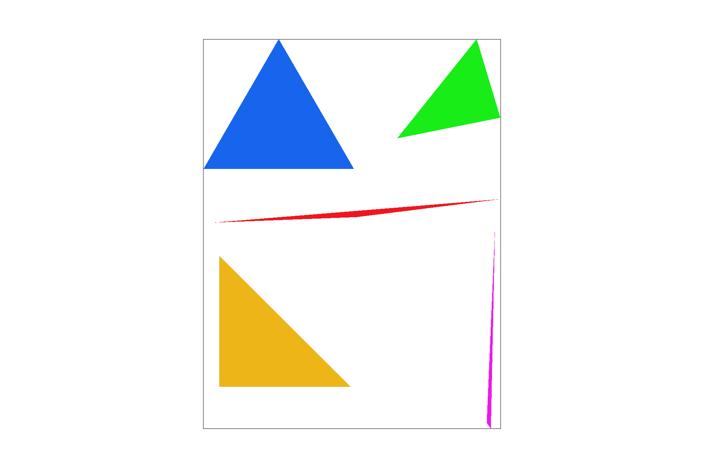
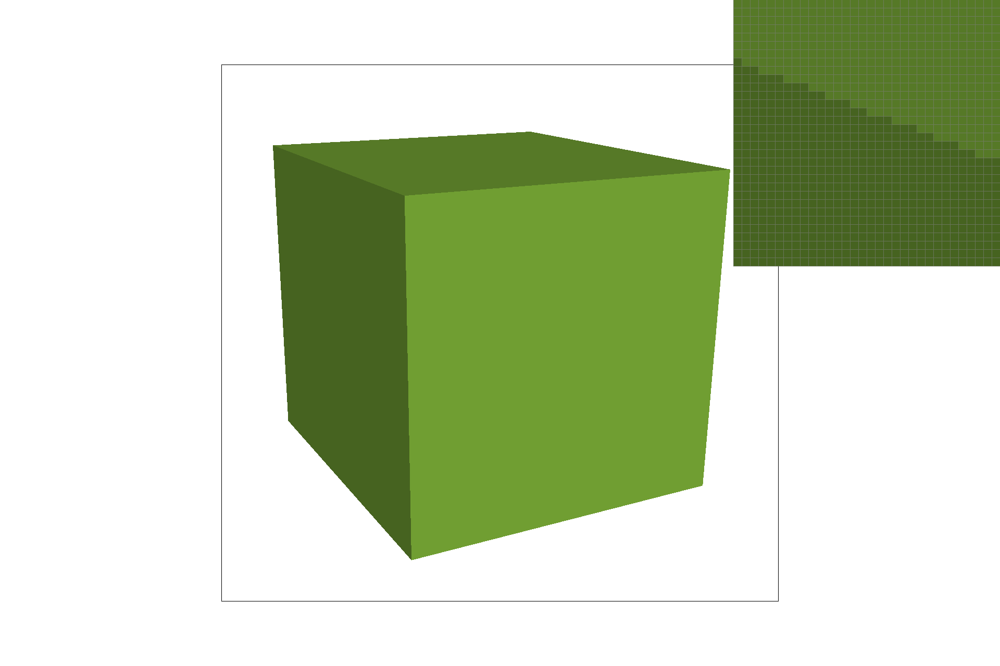
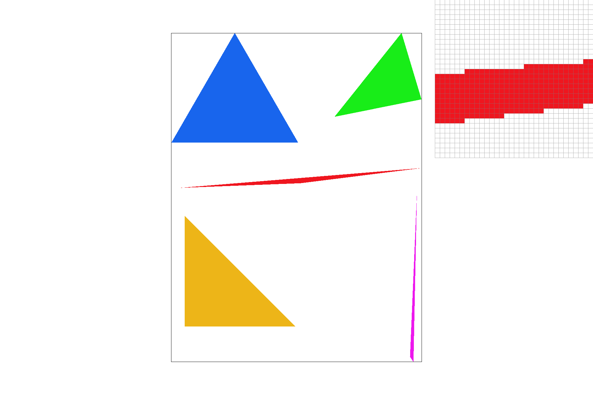
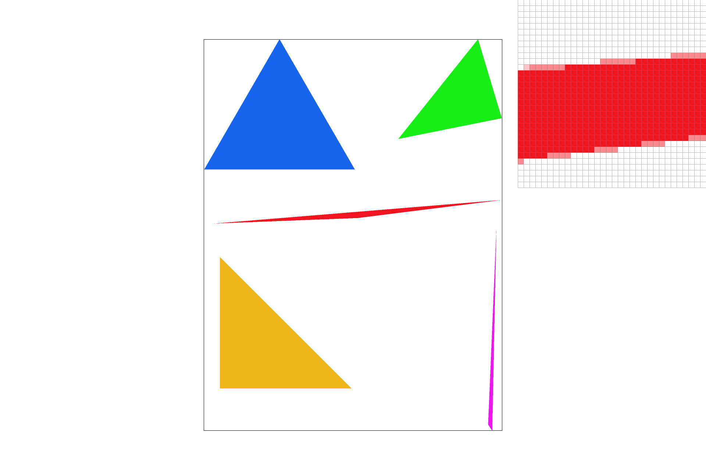
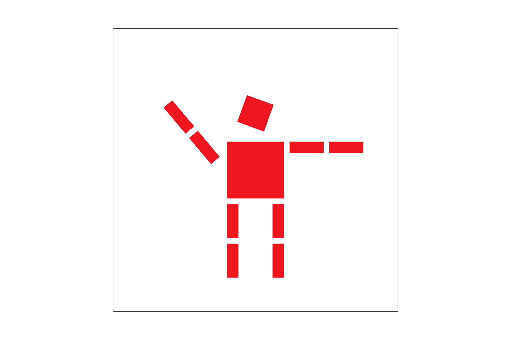
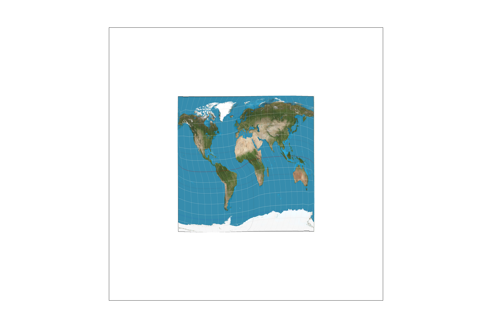
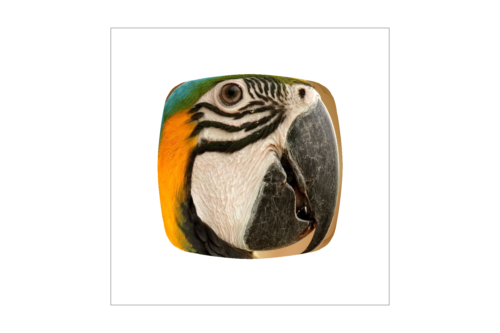

Overview
A rasterizer that can render an image based on 2D and 3D cooridinates to flat screens.
Section I: Rasterization
Part 1: Rasterizing single-color triangles
Rasterization is one of the most commonly used techniques in rendering images of 3D scenes. It helps to convert images described in vector graphics format into raster images which are composed of series of pixels, dots or lines. Among the primitives shapes that rasterization renders, triangles are one of the most basic yet most essential elements in composing computer graphics, since in Euclidean geometry, every three random, non-collinear points can determine one unique triangle as well as a unique plane which can define a two-dimensional Euclidean space. Thus, the rasterization of triangles is a core function in order to convert input information into pixel values through basic elements.
In Part 1, the triangle rasterization was implemented in Barycentric coordinates. With Barycentric coordinates, we can determine the bounding box by locating three (x,y) coordinate points and finding the max and min values for each x and y values. Then assign the color value to relative area.
After the basic elements are settled, we are going to refine them to a less jagged and more qualified raster image by increasing the sampling rate.
|

|

|
Part 2: Antialiasing triangles
The jagged shapes generated in Part 1 is called aliasing, a common problem in digital conversion which refers to the effect that causes different signals to be ‘aliases’ of one another . Aliasing would cause the misidentification of a signal frequency such as wrong sounds in audio. The process of fixing the frequency of the distortion by smoothing jagged edges on curved lines and diagonals in computer graphics is called antialiasing. In this part, we are going to use this technique to adjust the previous triangles.
In order to increase the frequency, we can adjust the sample_rate parameter in this project. We can first consider the triangle as a single pixel which contains a lot of sub-pixels that each carries different color values. Then the idea of supersampling is to take these sub-pixels and average out a color which can be applied to the entire triangle pixel. To do this, we need to examine every sub-pixel and create an average color based on their values, and finally modify the triangles to see if it has balanced out the jagged edges.
|

|

|
|
|
|
Part 3: Transforms
In this part, we make several changes to give the cubeman more lively features, by rotaing his arm and leg to give a "dancing" form.

|

|
Section II: Sampling
Part 4: Barycentric coordinates
In part 1, we have introduced that Barycentric coordinates can be considered as weights which can determine the location of a points, an average color, and even texture coordinates. According to the rule, α+β+γ=1, the changes of one point would influence the values of the other two points. Therefore, at vertex A, α=1 β=0 γ=0, which means that at point A, there is exact one weight determining the value.

|
Part 5: "Pixel sampling" for texture mapping
There are two pixel sampling techniques that we can use to re-scale the image by interpolating the color. The first one is called “nearest neighbor” which refers to a simple method of multivariate interpolation in one or more dimensions. By using this methods, we can select the nearest point’s value while ignoring the values of all neighboring points in the given (U,V) coordinate. In order to return the interpolated color in this part, we can locate the texel at this point and use MipLevel to scale it. The second technique is called “Bilinear sampling” which is an extension of linear interpolation on a rectilinear 2D grid by performing linear interpolation first in one direction, and then again in the other direction. Using the given (U,V) coordinate, we can find all neighboring points around it and return the color by interpolation based on these points and values.
In this part, we would slightly prefer bilinear sampling since the contrast between the the lines and the map looks smoother in the bilinear-modified image as shown above. In general, the sharper edges an image have, the more differences we can tell between the two techniques. This is because if the neighboring points of a given point are similar to each other, it is not necessary to use Bilinear technique since the output would only present small differences.

|
|
|
|

|
Part 6: "Level sampling" with mipmaps for texture mapping
In order to do sampling on different mipmap levels, we need (dudx,dvdx)(dudx,dvdx) and (dvdx,dvdy)(dvdx,dvdy) to get corresponding to a point p=(x,y) inside a triangle.
To do this, we need to calculate the barycentric coordinates of (x+1,y)(x+1,y) and (x,y+1)(x,y+1) in rasterize_triangle, and set them as variables p_dx_bary and p_dy_bary Then we calculate the UV coordinates sp.p_dx_uv and sp.p_dy_uv The width and height of the full-resolution texture image scale up the difference vectors: sp.p_dx_uv-sp.p_uv and sp.p_dy_uv-sp.p_uv Then we use the log of the max vector to get the level.
|

|
|
|
|
|
Bilinear level sampling is the slowest and has the most antialiasing power out of the level sampling options.
Level 0 level sampling is the most memory-hungry since it doesn't take advantage of the mipmap and it also has the least antialiasing power.
Out of the sampling options, nearest-pixel sampling is worse at anti-aliasing but the faster of the two.
Bilinear sampling is slower but does perform anti-aliasing nicely.
The effects compound on each other. In other words, bilinear level sampling combined with bilinear sampling is the slowest but the most powerful at antialiasing.